Machine parts
Machine parts are essential for vehicle building and other creative pursuits!
Bearing
(Light Weight)
- Everything you place on the bearing will revolve.
- Bearings can also be connected to an engine or the driver's seat to be controlled in different ways.
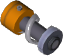
Sport Suspension
(Light Weight)
- Adds shock absorption and provides stability.
- Great for vehicles to prevent them from easily flipping over.
- This suspension is small, but has a firmer bounce.
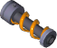
Off-Road Suspension
(Light Weight)
- Adds shock absorption and provides stability.
- Great for vehicles to prevent them from easily flipping over.
- This suspension has a lot of bounce, making it ideal for off-road vehicles.
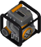
Gas Engine
(Heavy Weight)
- An engine with fixed speed and adjustable power, ideally suited to powering vehicles.
- Can be connected to a driver's seat or triggers.
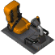
Driver's Seat
(Medium Weight)
- Makes bearings turn left and right.
- Can be connected to an engine to control the direction of travel.
- Can also be connected to triggers that can be activated from the seat.
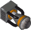
Thruster
(Light Weight)
- Enough of these can make things fly.
- Needs to be connected to a trigger or the driver's seat in order to activate.
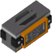
Controller
(Light Weight)
- Allows bearings to rotate in sequence.
- Perfect for building transforming creations.
- Needs to be connected to bearings.
- Activated by connecting a trigger or driver's seat to the controller.
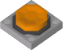
Button
(Light Weight)
- Activates stuff.
- The button is active for as long as it remains pressed.
- Activate it by interacting with it or by connecting it to a seat or driver's seat.
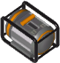
Electric Engine
(Heavy Weight)
- Powers bearings.
- An engine with fixed power and adjustable speed.
- A weak engine with an adjustable speed.
- Can be connected to a driver's seat or triggers.

Sensor
(Light Weight)
- It detects, it activates!
- The sensor activates when detecting any kind of surface that comes into its view, and has a reach of ten blocks.
- It can activate an engine, a thruster, the controller and more.
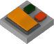
Switch
(Light Weight)
- Unlimited toggling on demand.
- The Switch activates whatever items connected to, making it indispensable when you want to turn things on and off with a single push.
- It can activate an engine, a thruster, the controller and more.
- Activate it by interacting with it or by connecting it to a seat or driver's seat.
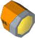
Light
(Light Weight)
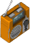
Radio
(Light Weight)
- All hits, all the time.
- Those beastly Farmbots have hijacked and are now transmitting classic selections from their deeply unusual taste in music.
- Activate it by interacting with it or by connecting it to a trigger.
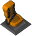
Seat
(Medium Weight)
- Used to avoid standing.
- Take a seat and relax or add it to your vehicle so your friends can tag along.
- Can be connected to triggers which can activate other interactive parts from the seat.
Horn
(Light Weight)
- Makes noise.
- Activate it by interacting with it or by connecting it to a trigger, seat, or driver's seat.
Toilet
(Medium Weight)
- Used for avoiding standing.
- Take a seat and relax or add it to your vehicle so your friends can tag along.
- Can be connected to triggers which can activate other interactive parts from the toilet.
- Don't forget to flush!